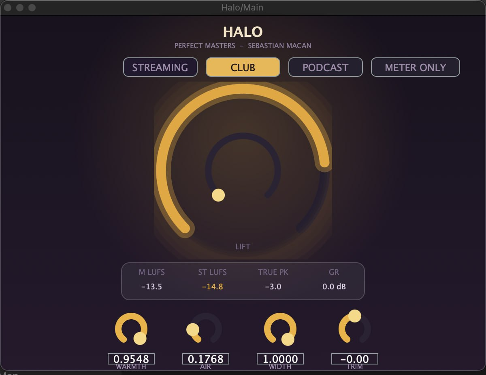
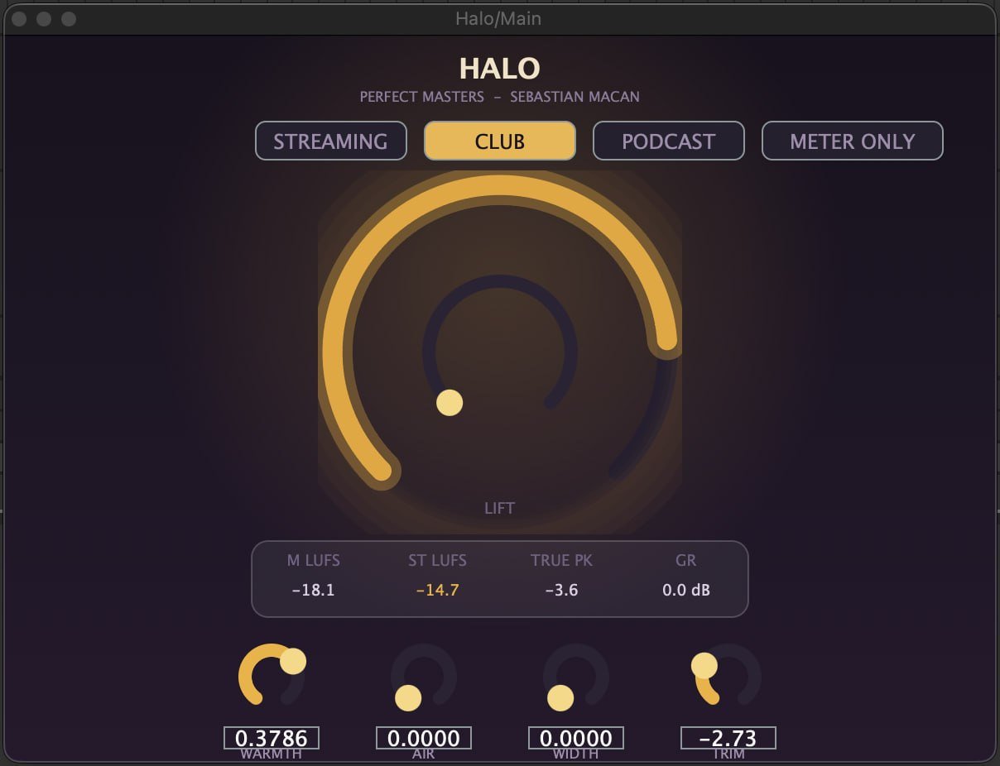

Drop it on your master channel. Turn LIFT until the halo closes.
Buy Halo · $29
v1.2 · VST3 + AU effect · macOS
Made with Halo
Full tracks Sebastian produced using Halo. Press play.
What Halo does
Halo is mastering with one knob and a golden ring. It lives on your master channel, always the last plugin in the chain. Pick a target, turn LIFT until the halo closes around it, and your track lands loud, glued and streaming-ready with a true-peak limiter on the door.
It is also a verified loudness meter. Halo shows live momentary and short-term LUFS plus true peak, measured to the same BS.1770 broadcast standard Spotify and YouTube use to judge your track, and verified accurate against a reference implementation. Flip on METER ONLY mode and Halo gets out of the way completely: bit-transparent passthrough, meters still running. Keep it on your master and you always know your numbers.
Get started in 3 steps
1. Put Halo last on your master. It goes at the very end of the chain, after everything else.
2. Pick a target. Streaming, Club, or Podcast. Each target is the loudness and tone that world expects.
3. Turn LIFT until the halo closes. Watch the golden ring close around the target. Closed ring means you have arrived. That is mastering.
Make it yours
Glue. Gentle compression that makes the track feel like one finished thing instead of parts.
Sheen. A polished top end lift tuned for masters.
Width. Final stereo polish so the master feels big on headphones and speakers.
True-peak limiter. The safety at the end. No clipping, no streaming penalty, no math required.
Pro tip
Making lofi? Use the Club target to really make it bounce. A touch of WARMTH on top and your beat suddenly sounds like a record. Then flip to Streaming and bounce a second master for Spotify, thirty seconds.
Sebastian's house / EDM recipe
Target CLUB. WARMTH up around 0.95. AIR at 0.18. WIDTH all the way to 1.0. TRIM at 0. Then turn LIFT until the halo closes - that is the setting in the video above.

"I use this setting on all my house / EDM music" - Sebastian Macan
Sebastian's lofi recipe
Target CLUB. WARMTH around 0.38. AIR and WIDTH at zero. TRIM pulled back to about -2.7. Then turn LIFT until the halo closes.

"I use this setting for all my lofi if anyone wants to copy it" - Sebastian Macan
Common questions
Can I really master a track with one knob? For streaming-ready loudness and polish, yes. Halo chains the essentials of a mastering rack, gain staging, glue, limiting, behind one LIFT control with a visual halo that closes as you approach the sweet spot. Turn until it closes, bounce, upload.
What do I get for $29? The full plugin, forever. One-knob mastering, all three targets, the verified LUFS meter and METER ONLY mode. No subscription, no locked knobs.
What DAWs does Halo work in? Any macOS DAW that loads VST3 or AU plugins: Ableton Live, Logic Pro, FL Studio, GarageBand, Reaper, Studio One and more. Logic and GarageBand pick up the AU version automatically.
Is there a Windows version of Halo? Windows builds are finished and getting their final polish. macOS is live today and Windows lands soon. Join the email list when you download and you will hear the moment it drops.
How do I install Halo? Run the installer and it puts the VST3 and AU files in the right folders for you. Restart your DAW, rescan plugins if needed, and it shows up like any other plugin.